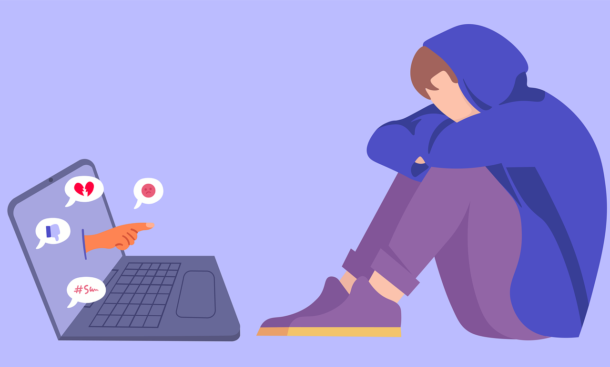

El ciberbullying es el acoso reiterativo e intencionado, que se produce en un período largo de tiempo a partir del uso de las nuevas tecnologías. La metodología que utiliza implica que la victima no pueda defenderse con facilidad. En el ciberbullying las víctimas y acosadores son niños/as o adolescentes, que tienden a ser compañeros en la escuela y tienen una relación física. Hay que tener en cuenta, que para que la conducta violenta pueda considerarse ciberbullying en ambos extremos debe haber menores. Cuando un adulto trata de engatusar a un menor a través de las redes para obtener un fin sexual, recibe el nombre de grooming. Por otro lado, las formas en las que se manifiesta el ciberbullying pueden ser muy diversas y su única limitación es la imaginación de sus participantes y el acceso a estas tecnologías. Algunas de las formas de presentación pueden ser: compartir imágenes comprometidas, crear perfiles falsos de las víctimas, hacer comentarios ofensivos en chats o en perfiles en las redes sociales de las víctimas, circular rumores por las redes, enviar mensajes con contenido amenazador, etcétera. El estudio del ciberbullying es relativamente reciente y son escasas las investigaciones que han indagado sobre las causas de este. Para poder contemplar las causas, deben tenerse en cuenta diversos factores, como: Sin embargo, cabe destacar que los niños y adolescentes se encuentran en plena exploración de su propia existencia, buscando encajar en los distintos grupos sociales y cualquier aspecto que desencaje o sea diferente en uno de ellos, se convierte en objeto de burla. Por otro lado, las víctimas perciben que están siendo acosadas por mera diversión del acosador y auto-percibiéndose a ellas mismas como débiles o inferiores. Una causa irrefutable del incremento de este acoso, es el auge de las redes sociales y su facilidad de acceso sin limitación de edad. Su fácil acceso también produce una dificultad de control por parte de los padres y maestros de esta situación, lo que complica la detección del ciberbullying a diferencia del bullying o acoso escolar, que puede ser observado más fácilmente.
Causas del cyberbulling
Consecuencias del cyberbulling
Son muchas las consecuencias que se manifiestan al padecer o ejecutar una situación de acoso o ciberbulling, tanto para la víctima como para el agresor, siendo el suicidio la más alarmante.
Es muy significativo el daño emocional que producen estas conductas en las víctimas. Este sufrimiento emocional puede ser más elevado que el acoso a través de otros métodos, debido a que la información dañina es pública y está disponible durante las 24h, siendo muy difícil eliminar el contenido. Las consecuencias del ciberbullying se asemejan a las consecuencias del acoso laboral. Las consecuencias más representativas son las siguientes:
Los acosadores, con estos actos, entrevén que pueden conseguir la atención y aquello que quieren a partir de actos violentos y el acoso a personas que consideran más débiles. Las principales consecuencias de estas conductas son las siguientes:
<